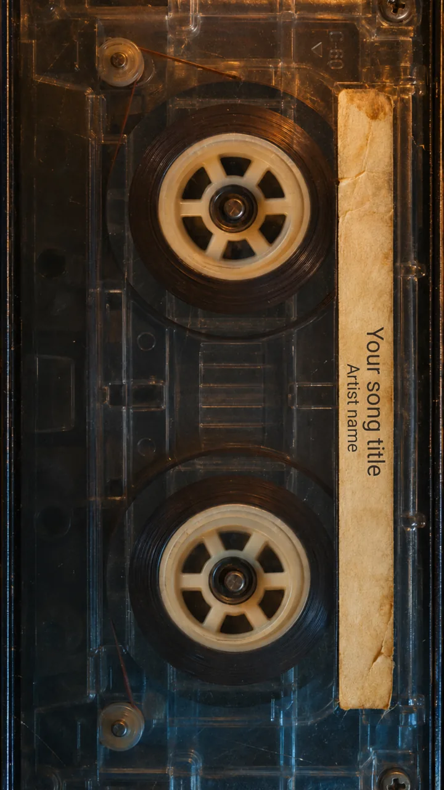
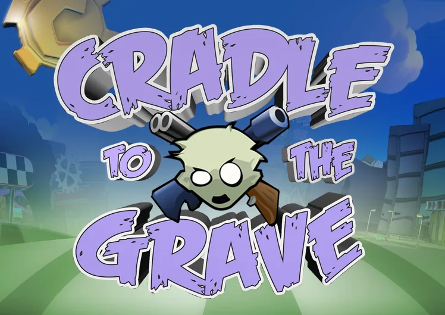

Free Music Listening / Android
FML
Make your music yours again.
Rediscover your own music collection with cassette-inspired visuals and extended DJ transitions. Your library, in a player made for listening.

Independent creative studio
We make original games, music experiences, and mixed reality. We also work with teams that need a creative partner to bring interactive ideas to life.




The product portfolio
Free Music Listening / Android
Rediscover your own music collection with cassette-inspired visuals and extended DJ transitions. Your library, in a player made for listening.
Mixed reality / Quest 3
Start with a real chessboard and bring virtual play to the table. First Steps explores what happens when the physical game stays at the center.
Multiplayer / Fortnite
Race through the canyon, battle other drivers, and fight your way to the tower in a multiplayer vehicle-combat game built in UEFN.
This is not sponsored, endorsed, or administered by Epic Games, Inc.
Games / Mobile, browser & Quest
Craft your loadout, command your squad, and survive the horde. Help shape the next chapter through the studio’s playtest program.
Work with the studio
Bring us a brief for game art, interactive prototyping, or creative production. We’ll talk through what you need and what a first milestone could look like.
Explore studio servicesGet to know the portfolio, see where each project stands, and reach out to discuss the studio’s direction.
Investor overview